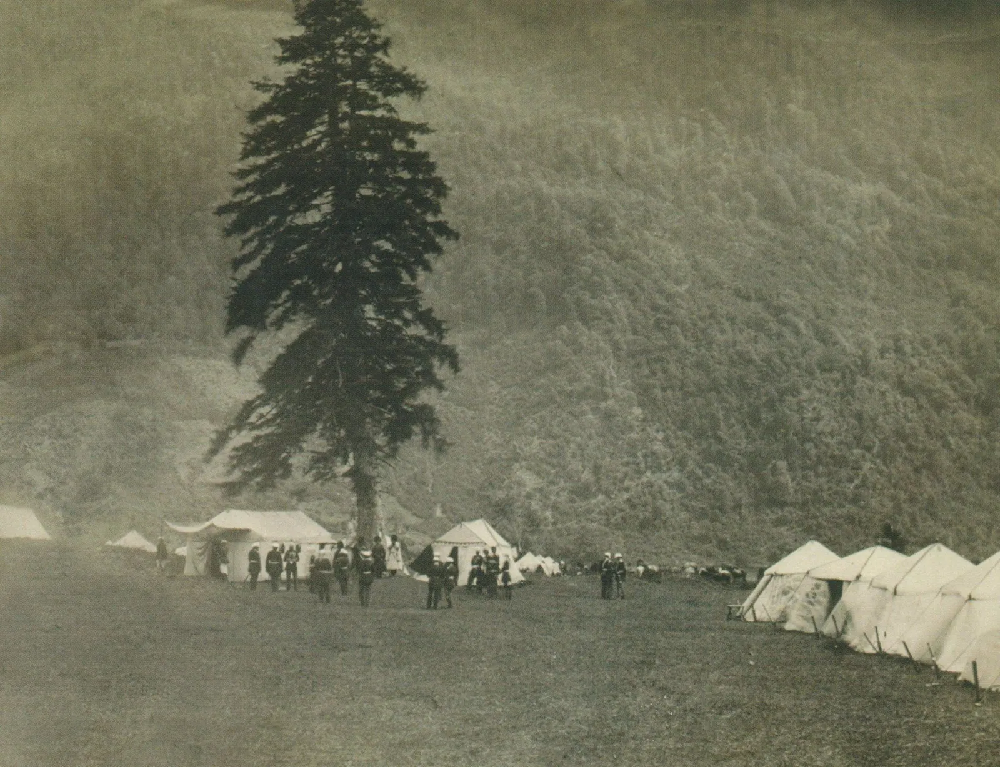
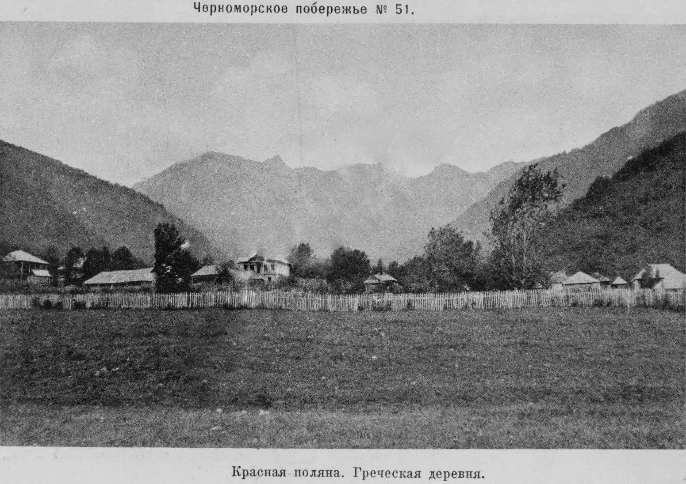
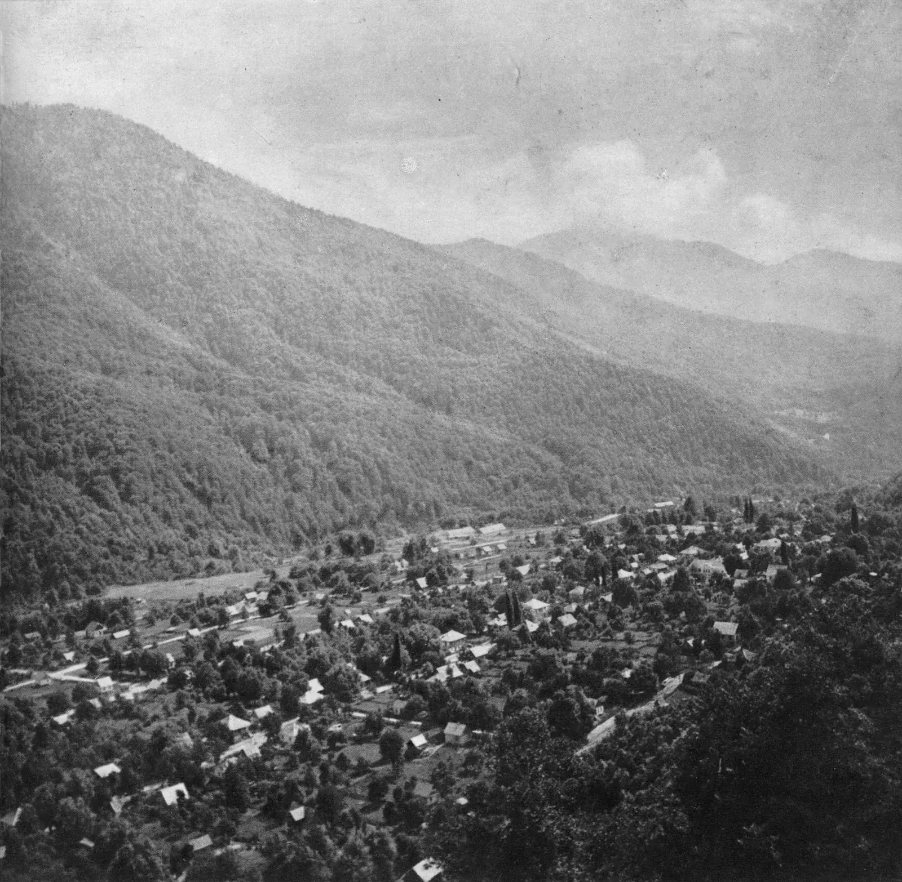

Глава девятая
1864
Красная Поляна
Здесь в 1864 году завершилась Кавказская война, а полтора века спустя прошла Олимпиада.
Урочище Кбаадэ, посёлок Красная Поляна

Горы над Красной Поляной весной, сегодня
Фото: Aleksandr Zykov, 2017, CC BY-SA 2.0
Голос места до 1864 года. Снимков аула нет
«Дома (которых всего до 200), отстоящие один от другого на довольно значительное расстояние, разбросаны на протяжении пяти вёрст почти, и каждое семейство имеет около жилища своего сад и небольшое поле, засеянное кукурузою и гоми».




- До 1864 года это земля ахчипсоуАбхазское горное общество. Долину они называли Губаа-двы, русские писали «Кбааде»
- Около 1864. Лагерь на полянеПодпись PastVu, датировка не подтверждена. 21 мая 1864 года здесь объявили конец Кавказской войны; для горцев этот год стал годом выселения. PastVu № 941 454
- 1903. Греческая деревняПонтийские греки пришли в 1878 году и назвали село Красная Поляна. Открытка М. М. Зензинова, PastVu № 676484
- 1957–1958. Курортный посёлокШоссе из Адлера открыли в 1900 году. И. М. Шагин, альбом «Сочи», 1959, PastVu № 1479119
- 2014. Горная олимпийская деревняХребет Псехако, внизу Красная Поляна. Фото: Sergei Kazantsev, CC BY-SA 4.0
- Одну долину государство осваивало триждыВоенный рубеж в 1864 году, климатический курорт с 1898–1900 годов, олимпийский горный кластер в 2014 году
Горы остались прежними, а долину за полтора века заново заселяли и перестраивали несколько раз. У каждого поворота есть дата и своя цена.
Что это
Горный посёлок в долине Мзымты
Красная Поляна — посёлок в долине реки Мзымты, в 38 километрах от моря, на высоте около 550 метров. Вокруг стоят хребет Аибга и гора Ачишхо.
Слово «красная» здесь старое и значит «красивая». Сегодня это горнолыжный курорт. В 2014 году рядом прошли олимпийские соревнования на снегу и на санно-бобслейной трассе.
- Где
- Долина Мзымты, Адлерский район Сочи
- Высота
- Около 550 м над уровнем моря
- До 1864
- Урочище Кбааде, земля абхазского общества ахчипсоу
- 21 мая 1864
- Объявлен конец Кавказской войны
- 1878 и 1886
- Греческое село Красная Поляна, эстонский посёлок рядом
- 2014
- Горный кластер XXII зимних Олимпийских игр
Как это появилось
Три освоения одной долины
1835
До 1864 года долину занимали горцы абхазского общества ахчипсоу. Свою землю они называли Губаа-двы, «поляна рода Губаа»; русские писали «Кбааде» или «Кбаадэ». В 1835 году сюда первым из русских добрался офицер-разведчик Фёдор Торнау и насчитал около 200 дворов, разбросанных на пять вёрст, при каждом сад и поле кукурузы. Рядом, на побережье, жили убыхи.
21 мая 1864
По старому стилю 21 мая, по новому 2 июня. В Кбаадэ соединились четыре отряда русской армии. При главнокомандующем Кавказской армией великом князе Михаиле Николаевиче прошли парад и молебен по случаю окончания , которая шла с 1817 года. Место назвали Романовском, в честь царской семьи.
1864
Для горцев этот год стал годом выселения. Адыги (черкесы), убыхи и абхазские общества, среди них ахчипсоу, были в основном переселены в Османскую империю, в том числе через порты Сочи и Адлера. Историки называют это по-разному: переселением, выселением, , геноцидом, а оценки числа выселенных и погибших сильно расходятся. Убыхский язык исчез: последний известный носитель, Тевфик Эсенч, умер в 1992 году в Турции. 21 мая адыго-абхазские народы отмечают как день памяти и скорби. Россия официально не называет события 1864 года геноцидом; парламент Грузии 20 мая 2011 года принял резолюцию о признании геноцида черкесов (по статьям «Геноцид черкесов» в русской и английской Википедии).
1869–1886
Опустевшую долину заселяли другие. В 1869 году основали село Романовское, оно просуществовало несколько лет. В сентябре 1878 года пришли из Ставрополья и назвали поселение Красная Поляна, они построили церковь святого Харалампия. В 1886 году 36 эстонских семей основали рядом посёлок Эстонский, с 1912 года Эсто-Садок.
1898–1900
Государственная комиссия нашла здесь подходящий климат и минеральные источники, а в 1900 году открыли шоссе из Адлера. Горная деревня стала местом отдыха.
2014
Долина стала зимней Олимпиады. Посёлок соединили с Адлером и аэропортом автомобильной и железной дорогой. Стоимость Игр оценивают по-разному: по словам Владимира Путина, на олимпийские объекты истрачено 214 млрд рублей, по отчёту «Олимпстроя», всего вместе с дорогами и инфраструктурой — 1,524 трлн рублей. WWF указывает, что только при строительстве дороги на Красную Поляну вырубили больше 23 гектаров колхидского самшита.

Фотография и подпись, 21 мая 1864
«Командующий войсками на Западном Кавказе генерал от инфантерии граф Н. И. Евдокимов, наместник на Кавказе великий князь Михаил Николаевич и генерал-майор Д. И. Святополк-Мирский».
- Кто на снимке
- Командование армии в день парада: граф Евдокимов, великий князь Михаил Николаевич и генерал Святополк-Мирский.
- Чей это взгляд
- Снимок сделан для победителей. Для адыгов, убыхов и абхазских обществ этот день стал началом выселения, поэтому один источник не рассказывает всей истории.
Данные русской стороны, 1864
«…в первой половине 1864 года из разных портов на Чёрном море количество переселившихся черкесов было следующим: из Новороссийска 61 995 человек, из Тамани 37 337 человек, из Сочи 46 754 человека, из Туапсе 63 449 человек, из Анапы 16 452 человека, из Адлера 20 731 человек, всего 236 718 человек, из которых на русские средства были отправлены 61 395 человек».
- Как читать
- Это счёт только одной стороны и только за полгода. Сколько людей выселено всего и сколько погибло, историки оценивают очень по-разному, и эти споры не закончены.
- Сочи и Адлер
- Два порта будущего Большого Сочи вместе дали больше 67 тысяч человек.
21 мая 1864
В урочище Кбаадэ объявили конец Кавказской войны. Для горцев этот день стал днём памяти и скорби.
По статьям Википедии «Красная Поляна (Сочи)» и «Черкесское мухаджирство»
Архив и сегодня
Долина за сто двадцать лет
На что посмотреть
Пять следов разных эпох
-

1
Название
По толкованию Кавказского заповедника, «Красная Поляна» значит «красивая»: в старом русском языке «красный» значило «красивый». Так долину назвали греки в 1878 году.
Открытка «Кавказъ. Красная Поляна. Общій видъ», 1905–1915, издательство братьев Борисовых, Новороссийск. PastVu № 853658
-

2
Дом в греческом стиле
В посёлке сохранились несколько таких зданий. Одно построено около 1900 года и служило общественным зданием, сначала школой: белый нижний этаж и тёмный деревянный верхний.
Фото: Vladimir Elistratov, CC BY-SA 4.0
-
3
Эстосадок и дом-музей Таммсааре
С 1988 года в Эстосадке работает дом-музей эстонского писателя Антона Таммсааре: он лечился здесь от туберкулёза с мая по октябрь 1912 года.
-

4
Дольмены
У Красной Поляны есть дольмены — каменные гробницы из плит с круглым отверстием. По ним проложена экотропа нацпарка. Это следы людей, живших здесь задолго до 1864 года.
Фото: Липунов Г. А., CC0
-
5
Аибга на старых снимках
На снимках 1920-х и 1960 года на хребте только тёмный лес. Сегодня на тех же склонах трассы и канатные дороги трёх курортов.


Значение для Сочи
Горная часть Большого Сочи: зимой здесь катаются на лыжах, а до моря всего 38 километров.
Значение для России
Три слоя истории государства в одной долине: конец Кавказской войны в 1864 году, заселение окраины разными народами и олимпийский проект 2014 года. Историки до сих пор спорят, как называть события 1864 года, и этот спор тоже часть истории.
Разделы курса: 1. Что такое Россия, 3. Российское мировоззрение и ценности
Ценность: единство многообразия

Факт, который мало кто знает
«Красная Поляна» значит «красивая поляна»: название дали греки в 1878 году. До этого долину называли Кбааде, а сами ахчипсоу — Губаа-двы, «поляна рода Губаа».
Открытка «Кавказъ. Красная Поляна. Общій видъ», 1905–1915, издательство братьев Борисовых, Новороссийск. PastVu № 853658
Что вы узнали
Три вещи о Красной Поляне
Конец войны
Кавказская война официально завершилась 21 мая (2 июня) 1864 года парадом и молебном в урочище Кбаадэ, на месте нынешней Красной Поляны. До этого здесь жили ахчипсоу.
Одна дата, два значения
Для армии это победа, для адыгов, убыхов и абхазских обществ — выселение. Историки спорят о терминах и числах, поэтому источники нужно называть и сравнивать.
Три освоения
Одну долину государство осваивало трижды: как военный рубеж (1864), как место для курорта (1898–1900) и как олимпийский горный кластер (2014).
Проверьте себя Почему у 21 мая 1864 года в истории два значения?
Для армии это день окончания Кавказской войны. Для адыгов, убыхов и абхазских обществ это начало выселения, поэтому 21 мая они отмечают как день памяти и скорби.
Источники главы Статьи, документы и авторы снимков
- Википедия: Красная Поляна (Сочи), Ахчипсоу (цитата Торнау), Убыхи, Черкесское мухаджирство, Эстосадок, Зимние Олимпийские игры 2014.
- История Красной Поляны. Кавказский заповедник.
- Отговорила роща на Кавказе // «Коммерсантъ», 21.08.2017: слова директора WWF России о вырубке самшита.
- Снимок 21 мая 1864 года: «Военная летопись России в фотографиях», М., 2009; Викисклад, общественное достояние.
- Архивные снимки PastVu: № 941454 («около 1864», датировка по подписи загрузившего, не подтверждена), № 676484, № 1479119, № 847868, № 853658, № 369214, № 701249, № 872031, № 665218; воспроизведены как учебная цитата.
- Современные снимки (Викисклад): Aleksandr Zykov, 2017, CC BY-SA 2.0; Sergei Kazantsev, 2014, CC BY-SA 4.0, и 2009, CC BY-SA 3.0; Alexxx Malev, 2015, CC BY-SA 3.0; Vladimir Elistratov, 2018, CC BY-SA 4.0; Липунов Г. А., 2016, CC0.